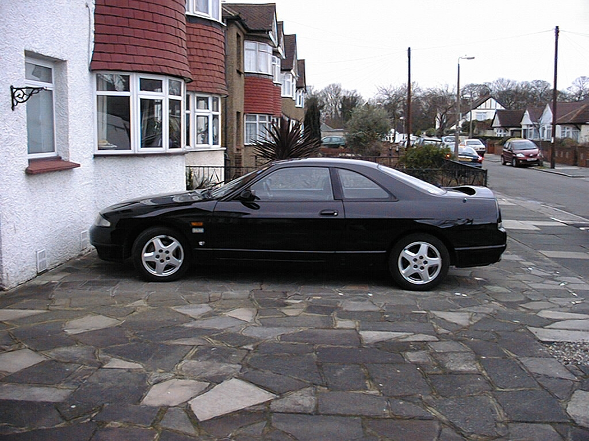
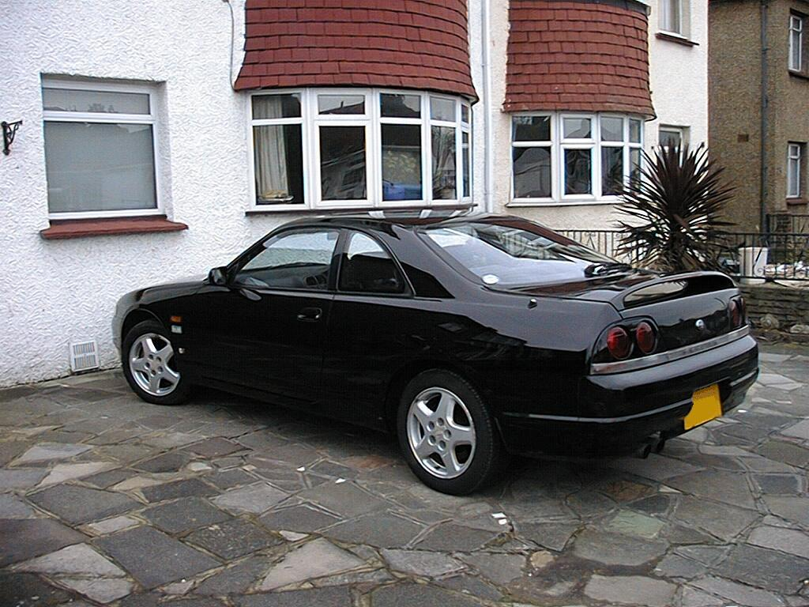
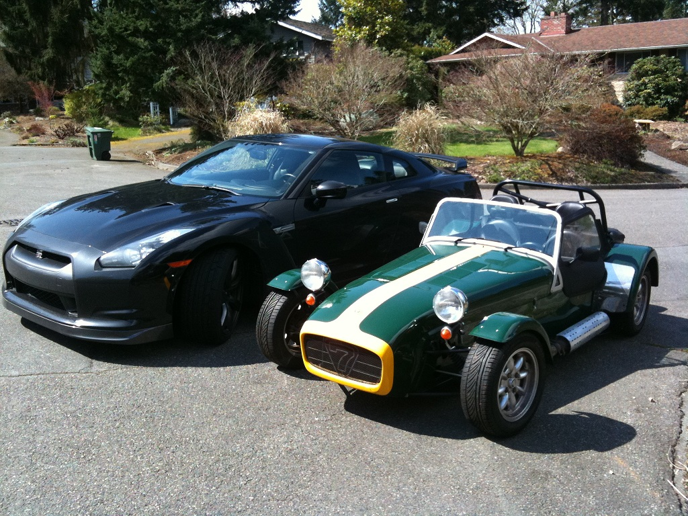
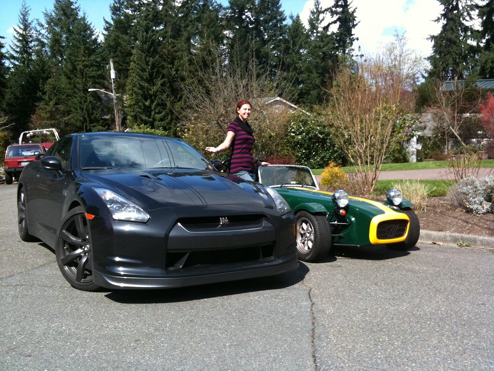
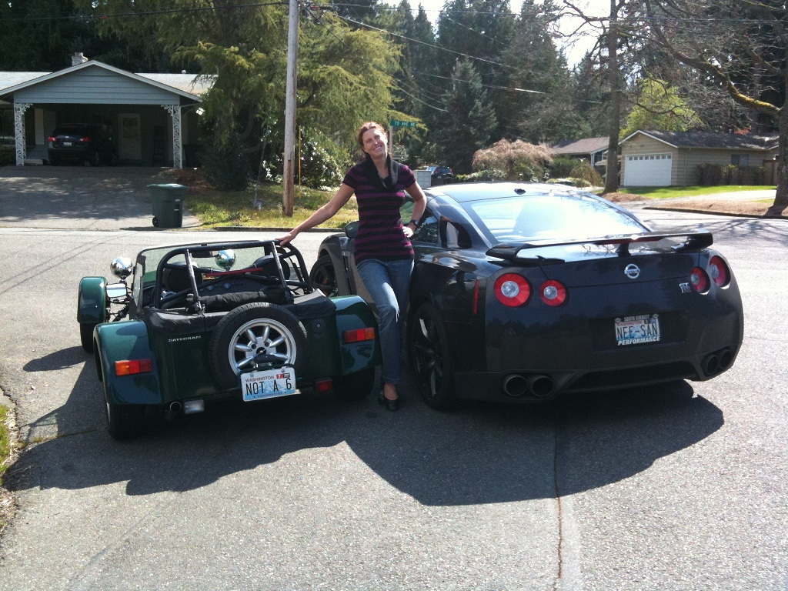
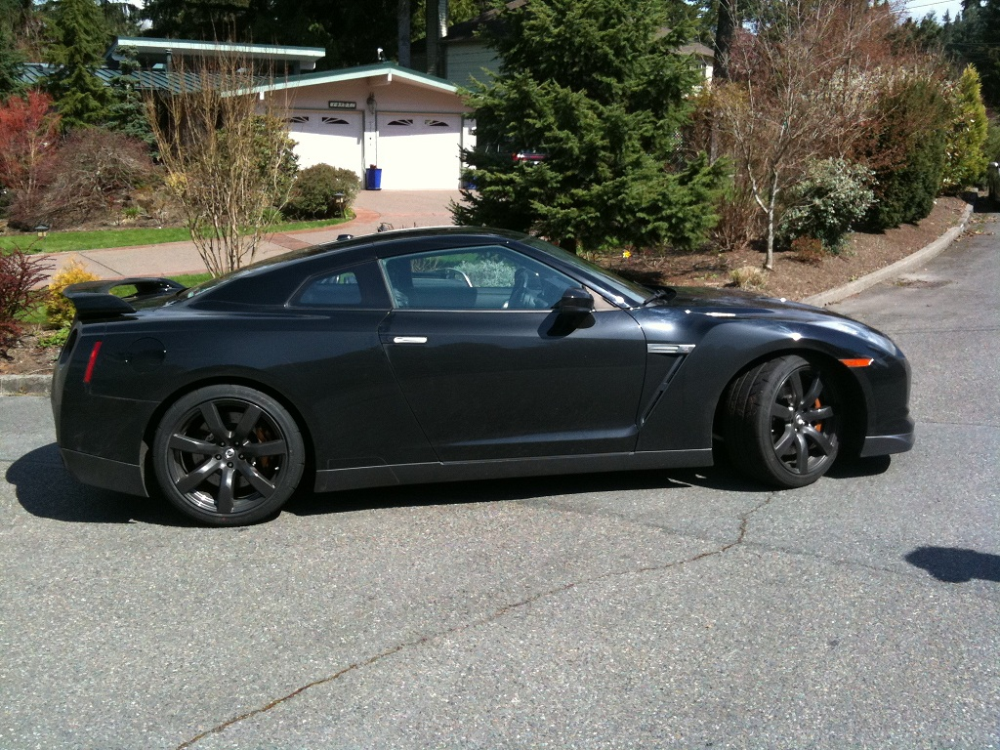
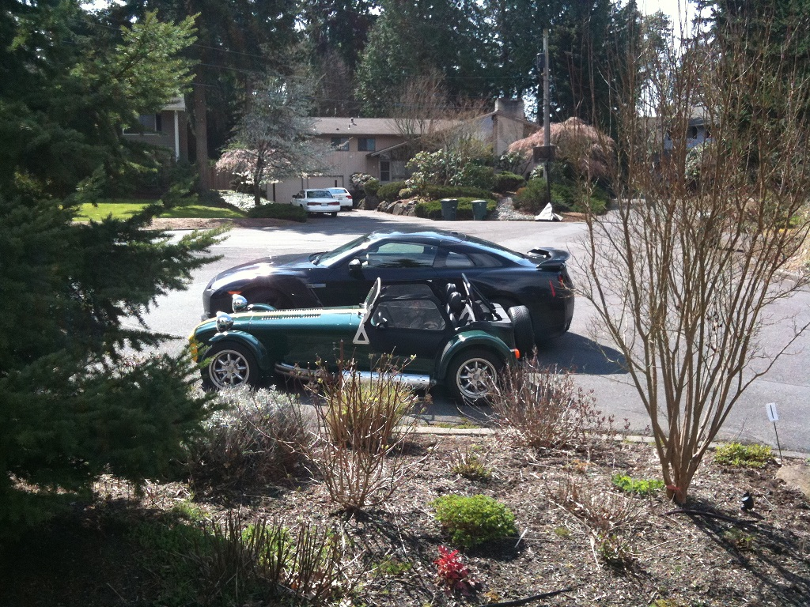
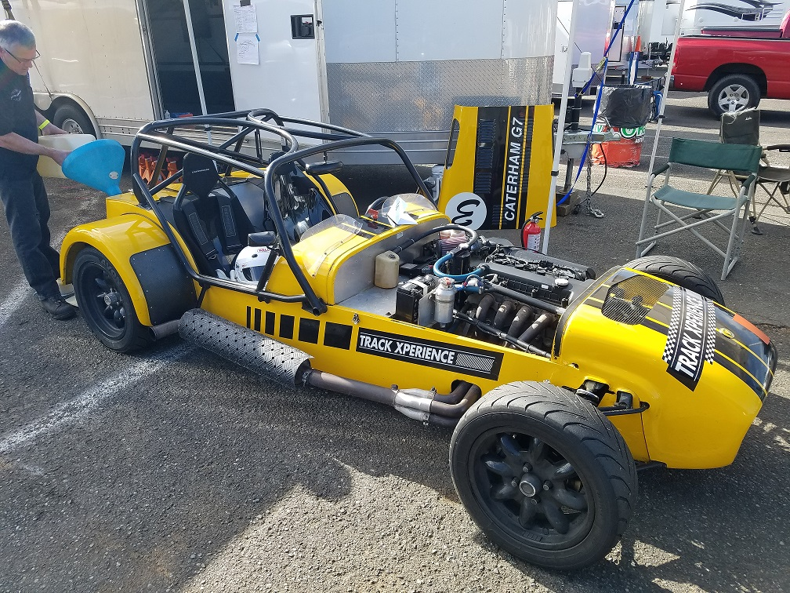
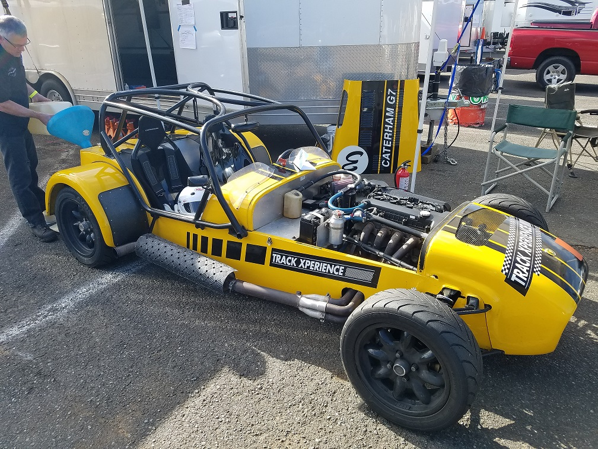

My lovely Nissan Skyline GTS25t outside my London house. Can't import them into the US so I had to sell it when we moved here.
Shows just how long this car is - those are very usable back seats. The length is one reason they gave it rear-wheel steer.
The distinctive four round tail lights of the R33 Skyline. I really like the look of the integral spoiler.

The current Forsyth Fleet - the sunlight on the Scooby hides just how filthy we let it get. Sorry mate - three cars and two garage spaces means the cheap one gets to live outside under the trees.
Some pictures taken outside a neighbour's house (where it was sunny).
The wife acts as both showroom dolly-bird and as a handy scale-setter for the tiny Seven.
"NOT A 6" - like the paint scheme, it's a Prisoner reference. "You are number 6." Except of course it isn't - it's... it's one louder.
"NEE-SAN" - means "honoured big sister" in Japanese, because the GT-R is a lady of refinement and taste. Also, at 3800lbs, she is kinda big.
Where did that pesky Seven get to?
There you are!
I also have a race-car Seven. Mechanically it's very similar to the road car, except for the obvious changes to the bodywork. The suspension is stiffer, the brakes are much better, and it uses a dry-sumped 2.3liter engine de-tuned to 200hp, but otherwise it drives very similarly - it has exactly the same chassis, gearbox, and LSD.
 
